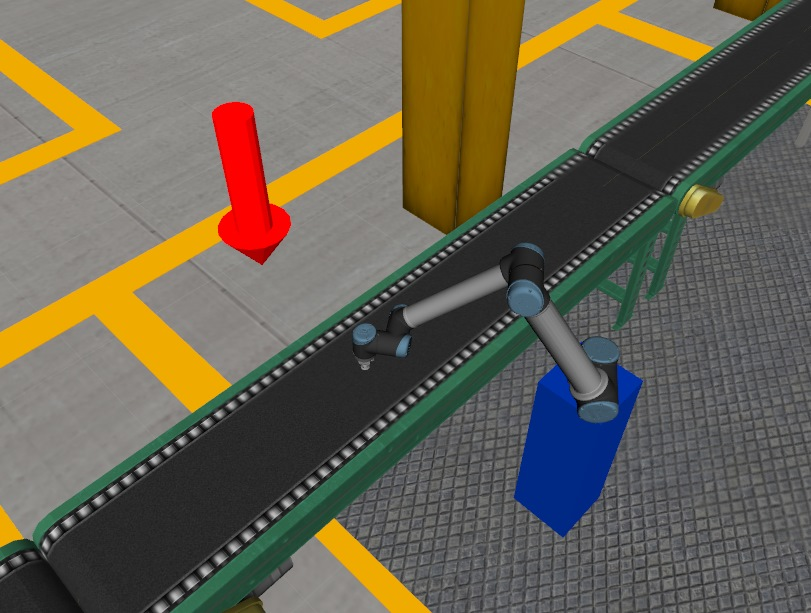
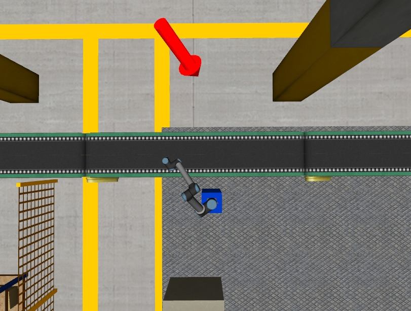
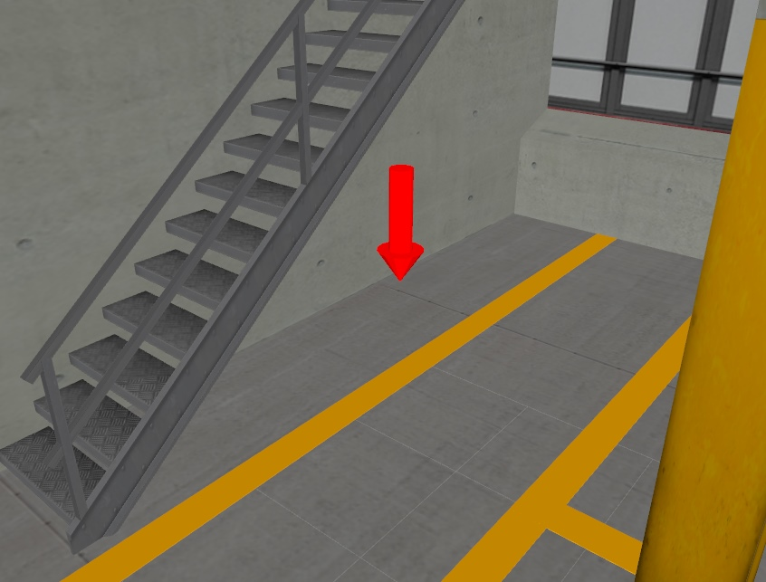
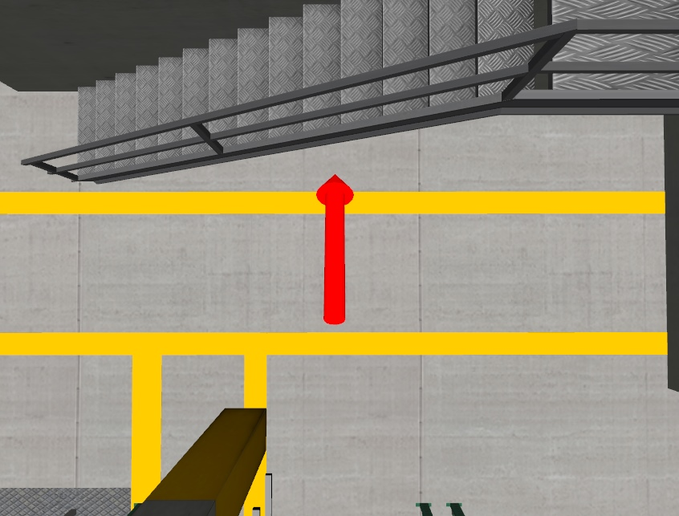
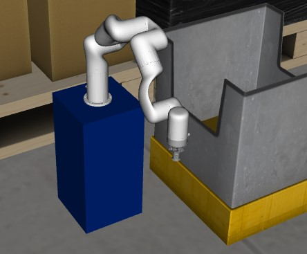
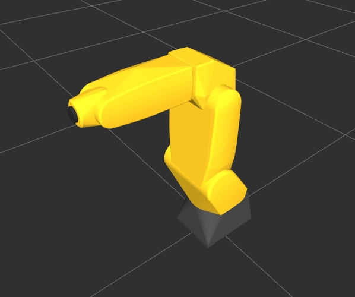

ROS2 urdf
In deze workshop leer je een aantal technieken om zelf realistische simulatie omgeving te bouwen.
Opdracht 1
Plaats een bin(bak) op de hieronder aangegeven plaats.


Bewerk daartoe het “assignment1.urdf.xacro” bestand in de package urdf_basics van 2_urdf directory. Voeg je urdf-xml code toe achter de regel:
<!-- Add your solution to assignment 1 here -->
Start assignment 1
ros2 launch urdf_basics visualize_assignment1.launch.py
Opdracht 2
In deze opdracht ga je een nieuw object toevoegen aan de fabriek: een groene bol.
De bol moet aan de andere kant van de transportband worden geplaatst, onder de trap aan het uiteinde van de fabriek.
Raadpleeg de volgende illustraties. De rode pijl geeft aan waar je de bol moet plaatsen.


Bewerk daartoe het “assignment2.urdf.xacro” bestand in de package urdf_basics van 2_urdf directory. Voeg je urdf-xml code toe achter de regel:
<!-- Add your solution to assignment 2 here -->
Start assignment 2
ros2 launch urdf_basics visualize_assignment2.launch.py
Opdracht 3
In deze opdracht dien je Robot 2 (de uFactory xArm6) te vervangen door een Fanuc LR Mate 200iC robot.
Website: Fanuc LR Mate-serie
In de onderstaande figuren staat de (al geplaatste) uFactory xArm6 robot aan de linkerkant. Daaronder staat de nieuwe robot, de Fanuc LR Mate 200iC (let op: dit toont alleen de robot, het is geen voorbeeld van de oplossing).


Bewerk daartoe het “assignment3.urdf.xacro” bestand in de package urdf_basics van 2_urdf directory.
Het xacro bestand van de Fanuc LR Mate 200iC robot bevindt zich in de volgende plaats:
Package: fanuc_robots
Directory: urdf
Bestandsnaam: lrmate200ic.urdf.xacro
Voeg je urdf-xml code toe achter de regel:
<!-- Update the below block for assignment 3 here -->
Start assignment 3
ros2 launch urdf_basics visualize_assignment3.launch.py